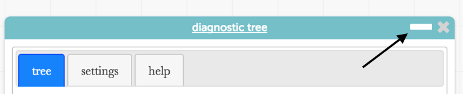
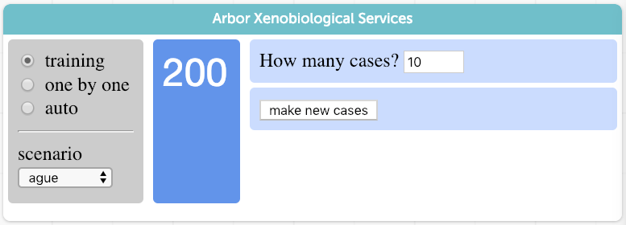

Trees in a Diagnosis Game
To begin, simplify the screen: minimize the diagnostic tree window
by pressing the minus sign in its title bar.
Move it away so you're not distracted by it; we'll get to it later.

Scenario:
You're a xenobiologist studying alien creatures.
Sometimes they get sick. At the beginning of our tale, you have records for 10 creatures, some of whom were
suffering from ague (an alien disease).
What is it about the creatures that makes them susceptible to ague?
- Starting with the Arbor Xenobiological Services panel in Training mode, explore the data you already have—10 cases—to
see if you can figure out what "predicts" the disease (in this case, ague).
-
In the "creatures" data table, the health column tells you if they are sick or well.
-
Figure out what other data you can use to predict health.
-
Making a graph of the data might help. A lot. (This is CODAP, after all!)
If you have never made a graph in CODAP before, try
this.

- Get additional cases to confirm your ideas.
Do this by pressing make new cases
in the little panel
on the right side of Arbor Xenobiological Services.
- When you're confident, change the left-hand choice to one by one.
- Now you will diagnose individual cases. See if you're right.
If you're not consistently right, review your data
and see what you might have missed.
(Notice that you're gaining points!)
- When you think you have this figured out, we will automate the process of diagnosing these creatures.
See the next section on using trees for diagnosis.
Trees for Diagnosis
To diagnose a patient, we ask a sequence of questions.
The answers will help us predict whether creatures have this sickness.
The answer to a question leads either to a diagnosis (sick or well) or to a further question.
We will represent—and automate—this process using the diagnostic tree.
- Expand the diagnostic tree by pressing that minus sign again.
- Arrange your screen so you can see it. (You might want to make your data table smaller.)
The diagnostic tree should look like the next picture, except that your numbers will be different.

Grow your tree by dragging attribute names from the palette of names (at the bottom of the window) to the box.
You probably already figured out which attribute is important.
-
Drag hair from the palette to the box.
You should see this:
Here's what it means:
- Look at the top box (in the illustration; your numbers will be different). Among all of the creatures, 5 out of 10 (50%) are sick.
- Our first "question" is, what color hair does the patient have? (That's why hair? is in the bottom
stripe).
- There are two possible answers, blue and pink. Each one leads to a different box.
- The left-hand box tells us that there are 5 creatures with blue hair, and none of them (0%) are sick.
- The right-hand box tells us that there are 5 creatures with pink hair, and all 5 of them (100%) are sick.
Note: You can also "hover" over any box or link in the diagnostic tree to get more information.
Positive and Negative
Often, medical specialists talk about "positive" and "negative" diagnoses and results.
With our tree tool, we will think of "sick" as positive, like a positive test for ague.
To predict which creatures have ague, we will label them as positive.
Automation
Suppose we want to automate our diagnoses.
We have to tell the tree to assign the pink-hair box to the positive ("sick") group
and the blue-hair box to the negative ("well") group.
-
Click the box at the top for show diagnosis "leaves." You will see this:
The gray circles with (?) indicate that you have not yet assigned diagnoses to those boxes.
- Click them to assign diagnoses. Make it so it looks like this:
When you have your tree set the way you want it, go back to Arbor Xenobiological Services and choose
auto on the left.
Then click the run tree button to create 10 cases.
Your diagnostic tree will automatically diagnose 10 new patients. How did your tree do?
Explore
- If you haven't already, make graphs of the data to show why your diagnosis works.
- Click a case in the data table or in a graph. See how it is reflected in the tree.
- Click one of the bottom boxes in the tree. See how it is reflected in the table and in any graphs.
- Try making some bad trees, or make bigger trees, and see how they work.
- Figure out what affects your score.
- Try other scenarios. They're harder.
(When you choose one, your old data will disappear. And you'll have to configure variables. See below.)
Configuring Variables
You will find, as you work through harder scenarios,
that you will want your question to be different from what the default situation allows.
For example, suppose you want to ask about weight.
Since each question is binary, you can only ask if the weight is above or below some number.
But what number?
You need to configure the attribute. When you hover over its name in the tree,
you will see a gear button appear to the left.
Click it to get the configuration dialog.
- For a numeric attribute, you can set the "cutoff point."
- For a numeric attribute, you can set the operator, that is, greater than or less than.
- For a categorical attribute, click the possible values to move them left and right.
- For any attribute, click the left-right button to swap the left and right values.
- For any attribute, change the labels to be something meaningful. For example, for weight,
you might use heavy and light.